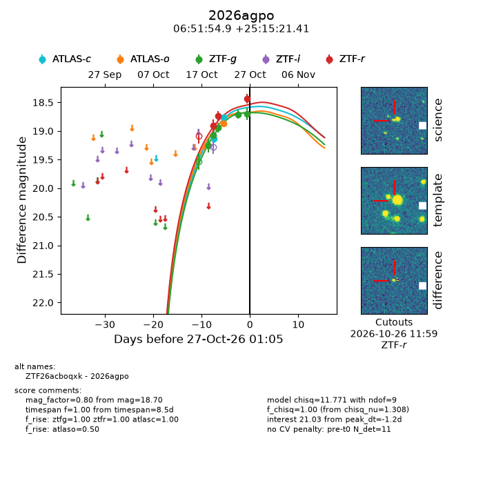
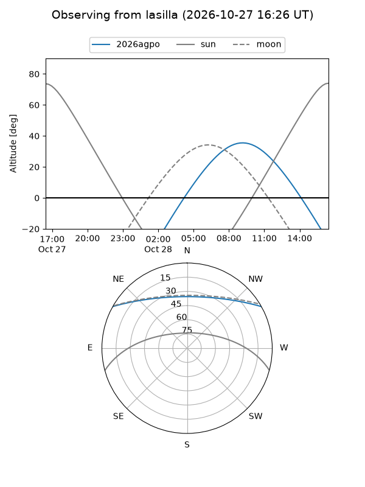
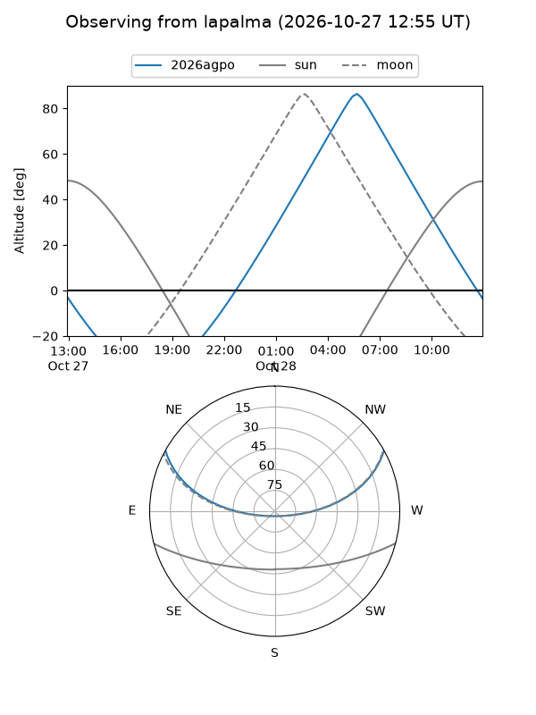
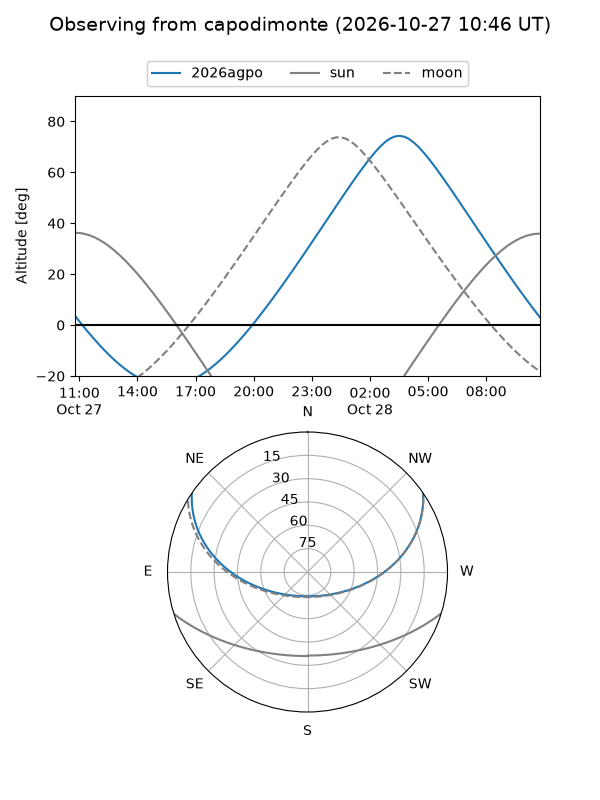
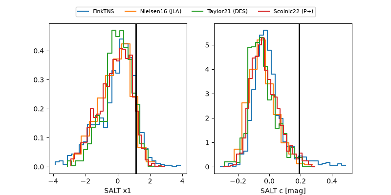

2026agpo
Target 2026agpo at 2026-10-27 13:02
Aliases and brokers:
FINK-ZTF: ztf.fink-portal.org/ZTF26acboqxk
Lasair-ZTF: lasair-ztf.lsst.ac.uk/objects/ZTF26acboqxk
ALeRCE-ZTF: alerce.online/object/ZTF26acboqxk
YSE-PZ: ziggy.ucolick.org/yse/transient_detail/2026agpo
TNS name: wis-tns.org/object/2026agpo
Direct TNS query: direct search
alt names
ZTF26acboqxk (ztf,fink_ztf)
2026agpo (tns,yse)
Coordinates:
equatorial (ra, dec) = 102.9789,+25.25595
equatorial (HMS+DMS) = 06:51:54.93,+25:15:21.41
galactic (l, b) = (190.2027,+11.31652)
Flags:
peak dt: -0.7
Photometry:
last atlasc=18.76, atlaso=18.87, ztfg=18.70, ztfr=18.43
2 atlasc, 1 atlaso, 5 ztfg, 3 ztfr detections
Lightcurve

Visibility



Additional plots
